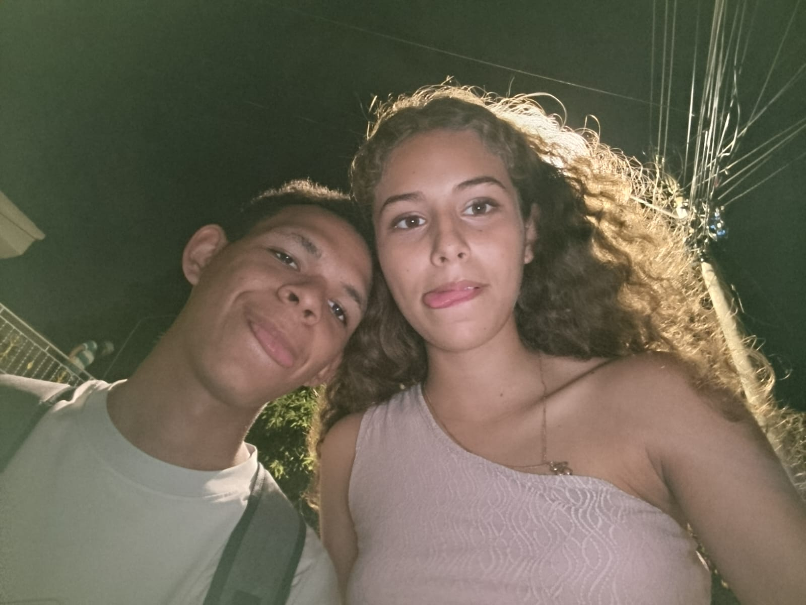

Para ti
En este Día del Amor y la Amistad
Te quiero. Y cuando digo que te quiero, no me refiero a un simple “te quiero” dicho por costumbre, por compromiso o porque sea bonito decirlo. Te quiero de la manera más sincera que sé, de esa forma que nace sin que uno la planee y que, con el tiempo, se vuelve cada vez más difícil de explicar con palabras.
Desde que te conocí supe que eras una gran chica. Aunque, siendo completamente sincero, decir solamente “gran chica” se queda demasiado corto para describir lo que pienso de ti. Para mí eres una persona increíble, diferente, y de alguna manera tienes algo que no he encontrado fácilmente en los demás.
En mi vida han llegado muchas personas. Personas diferentes, personas buenas, personas que estuvieron durante un tiempo y personas que prometieron quedarse. Pero también conocí personas que terminaron demostrando indiferencia, personas a las que no les importaba realmente lo que yo sentía y personas que solamente estaban cuando necesitaban algo.
Y después llegaste tú. Y contigo fue diferente. No porque seas perfecta ni porque nunca te equivoques, sino precisamente porque eres tú. Porque tienes una manera de ser que considero genuina, porque tienes un corazón sincero, humilde y amable, y porque incluso con tus problemas y tus días difíciles sigues teniendo esa parte de ti que hace que piense que vale la pena cuidarte.
No necesito que seas perfecta para quererte. No necesito que siempre estés feliz, ni que tengas algo interesante que decir, ni que seas la mejor versión de ti misma todos los días. Puedes cansarte, puedes equivocarte, puedes llorar, puedes sentirte perdida, puedes tener un día horrible y aun así vas a seguir siendo importante para mí.
Sé que tu vida no siempre ha sido sencilla. Sé que has tenido situaciones complicadas y que algunas cosas de tu vida familiar tampoco han sido fáciles. No pretendo decir que conozco todo lo que has vivido, porque sería imposible. Hay partes de tu historia que solamente tú conoces, recuerdos que quizás todavía duelen y momentos que probablemente te hicieron cambiar.
No puedo solucionar tu vida ni puedo evitarte todos los problemas que puedan aparecer en el camino. Tampoco puedo prometerte que voy a poder estar físicamente a tu lado cada vez que algo suceda, porque ahora mismo existe una distancia que nos separa.
Pero quiero que sepas que, mientras esté dentro de mis posibilidades, voy a estar para ti. Cuando necesites hablar, te escucharé. Cuando necesites apoyo, intentaré dártelo. Cuando estés triste, intentaré hacerte sonreír. Y cuando simplemente necesites compañía, aunque sea para hablar de cualquier tontería, aquí estaré.
No te prometo una presencia perfecta, porque soy humano y también puedo equivocarme, tener días malos o no saber qué decir. Pero sí puedo decirte que mi cariño por ti no depende de que todo esté bien.
La distancia podrá hacer que no pueda estar físicamente contigo, pero no puede borrar el cariño que te tengo. Puede hacer más difíciles las conversaciones y los momentos juntos, pero no puede hacer que dejes de importarme.
Para mí vales muchísimo más de lo que probablemente imaginas. Y si alguna vez me preguntaran cuánto estaría dispuesto a hacer por ti, probablemente no sabría responderlo con una cantidad exacta, porque hay personas que dejan de medirse en palabras y comienzan a medirse en sentimientos.
Si pudiera elegir entre salvar el mundo o salvarte a ti, probablemente buscaría una tercera opción. Buscaría la manera de salvarte a ti sin tener que destruir el mundo. Y si no existiera esa posibilidad, probablemente intentaría salvarte primero, porque para mí eres demasiado importante.
Pero quiero que entiendas que todo esto no tiene que ver solamente con tu apariencia. Yo no me fijé únicamente en tu cuerpo ni en lo que se puede ver a simple vista. Me interesó conocerte. Me interesó tu manera de pensar, tu forma de ser, tu corazón, tus pequeñas cosas, tus emociones, tus problemas y tus alegrías.
Yo vi tu alma antes que tu cuerpo. Y con eso me bastó. Porque lo que hizo que empezara a quererte no fue solamente lo que mis ojos podían ver, sino todo aquello que fui descubriendo cuando tuve la oportunidad de conocerte de verdad.
Para mí eres especial por muchas razones. Eres especial porque tus ojos son únicos. Tienen algo que me encanta y que hace que resaltes entre las demás personas. No sé exactamente cómo explicarlo, simplemente me parecen hermosos.
Eres especial por tus cachetes. Sí, tus cachetes. Esos que me encantan y que probablemente seguiría molestando durante horas solamente porque puedo. Me encanta poder agarrarlos, estrujarlos y molestarte con ellos, porque incluso esas pequeñas cosas hacen que seas todavía más especial para mí.
También me gusta tu voz. Tiene una suavidad que me gusta escuchar. Quizás no te des cuenta, pero hay voces que simplemente transmiten algo. La tuya me transmite tranquilidad, y me gusta saber que eres tú quien está al otro lado.
Pero más allá de tus ojos, de tus cachetes, de tu voz o de cualquier otra cosa física, está tu corazón. Y eso es lo que realmente valoro. Tu forma de pensar, tu forma de sentir, tu manera de expresarte y todas esas pequeñas cosas que hacen que seas la persona que eres.
No me enamoré de una apariencia. No empecé a quererte por una fotografía. No necesitaba que fueras físicamente perfecta. Lo que me hizo quedarme fue conocerte. Fue descubrir quién eres. Fue encontrar esa parte de ti que no todos tienen la oportunidad de conocer.
Yo vi tu alma antes que tu cuerpo, y con eso me conformé. Y así será. Porque para mí el verdadero valor de una persona nunca estará solamente en lo que se puede ver, sino en lo que lleva dentro.
No sé exactamente qué nombre ponerle a lo que tenemos, y sinceramente tampoco creo que necesitemos uno. No eres mi novia y no necesito llamarte así para reconocer lo importante que eres para mí.
Eres mi amiga, pero decir solamente “amiga” también se siente demasiado pequeño para explicar el lugar que ocupas. Eres una persona especial, una persona que quiero, que respeto, que quiero cuidar y cuya felicidad me importa muchísimo.
Nuestra relación es única. No necesito compararla con lo que otras personas tienen, porque lo que tenemos es nuestro. No necesito que sea igual a ninguna otra relación. No necesito ponerle una etiqueta. Me basta con saber que existe y que es algo genuino.
A veces pienso que las personas llegan a nuestras vidas por alguna razón. Algunas llegan para enseñarnos algo, otras para acompañarnos durante una etapa y algunas simplemente pasan. Pero hay personas que, aunque no sepamos cuánto tiempo permanecerán, dejan una marca que difícilmente se puede borrar.
Tú eres una de esas personas para mí. Y no sé qué pasará dentro de uno, dos, cinco o diez años. No sé qué caminos tomaremos ni dónde estaremos. Pero sí sé que me alegra muchísimo haber tenido la oportunidad de conocerte.
No quiero esperar demasiado tiempo para decirte lo que siento. Muchas veces las personas esperan el momento perfecto para decir algo importante y, mientras esperan, el tiempo simplemente pasa. Por eso hoy quiero aprovechar este día para decirte todo aquello que quizás no siempre logro expresar.
Me importas. Me importa cómo estás, cómo te fue durante el día, si comiste, si descansaste, si estudiaste, si estás feliz, si estás triste, si estás aburrida, si estás estresada o si algo te preocupa.
A veces probablemente te pregunte cosas que parecen demasiado simples: “¿Ya comiste?”, “¿Ya te bañaste?”, “¿Ya descansaste?”, “¿Cómo te fue hoy?”, “¿Cómo vas con tus estudios?” o simplemente “¿Estás bien?”. Quizás parezcan preguntas normales, pero detrás de cada una existe una pequeña parte de mí diciendo: “Me importa que estés bien”.
Quiero conocer tus pequeños detalles. Quiero saber qué cosas te hacen reír, qué cosas te molestan, qué cosas te emocionan, qué sueños tienes, qué lugares quieres conocer, qué canciones te gustan y qué recuerdos te hacen sonreír.
Quiero conocer incluso esas pequeñas cosas que quizás tú consideres insignificantes, porque son parte de ti. Y yo quiero conocer a la persona completa, no solamente la versión que le muestras al mundo.
Si algún día tienes que elegir entre quedarte callada o hablar conmigo porque tienes un problema, quiero que recuerdes que puedes hablar. No porque yo tenga todas las respuestas ni porque pueda arreglarlo todo, sino porque quizás algunas veces no necesitas una solución. Quizás simplemente necesitas que alguien te escuche.
Y si alguna vez puedo ser esa persona, lo seré. Quiero estar para tus buenas noticias, pero también para las malas. Quiero escuchar cuando estés emocionada, pero también cuando estés triste. Quiero celebrar contigo cuando consigas algo y acompañarte cuando algo no salga como esperabas.
Porque acompañar a alguien no significa aparecer solamente cuando todo está bien. También significa quedarse cuando las cosas se complican. Y aunque no pueda prometerte una presencia perfecta, sí puedo prometerte una intención sincera: la intención de cuidarte, respetarte, escucharte y apoyarte.
Cuando digo que haría mucho por ti, lo digo porque realmente siento que tu bienestar tiene un valor enorme para mí. Si alguna vez tengo poco y tú necesitas algo que puedo compartir, compartiría contigo. Si tengo que sacrificar algo mío para ayudarte y está dentro de mis posibilidades, lo haría.
No porque quiera que tú me debas algo. No porque espere que hagas lo mismo por mí. Sino porque así entiendo yo el cariño. Para mí querer a alguien también significa ser capaz de compartir lo poco que tienes y poder decir: “Si puedo ayudarte, entonces quiero hacerlo”.
Pero también quiero que sepas que nunca quisiera que tú sufrieras por mí. Nunca quisiera que te sacrificaras de una manera que te hiciera daño. Si hago algo por ti, quiero que sea porque me nace, no porque espere recibir algo a cambio.
Quizás por eso existe una idea que representa bastante bien lo que siento: un héroe de una historia podría sacrificar a una persona para salvar al mundo. Yo buscaría una tercera opción. Buscaría la manera de salvarte a ti sin tener que destruir el mundo.
Y si no existiera esa posibilidad, probablemente intentaría salvarte primero. Porque para mí eres demasiado importante como para pensar simplemente en reemplazarte o dejarte atrás.
Pero tampoco quiero que todo esto sea solamente algo dramático. Quiero que recuerdes también las cosas simples. Quiero seguir riéndome contigo, seguir molestándote, seguir escuchando tus historias y seguir teniendo conversaciones que quizás no llevan a ninguna parte, pero que terminan convirtiéndose en recuerdos.
Quiero seguir compartiendo momentos que quizás en el instante parecen pequeños, pero que después terminan siendo importantes. Una conversación a medianoche, una risa inesperada, una llamada, un mensaje, una tontería que solamente nosotros entendemos.
Son pequeñas cosas, pero cuando vienen de alguien importante, significan muchísimo.
No sé qué será de nosotros en el futuro y tampoco quiero preocuparme demasiado por eso. Prefiero valorar lo que existe ahora, porque el tiempo pasa demasiado rápido y muchas veces las personas se dan cuenta demasiado tarde de lo importante que alguien era para ellas.
Por eso estoy escribiéndote esto hoy. Porque es el Día del Amor y la Amistad y, aunque podría simplemente decirte “feliz día”, siento que tú mereces mucho más que dos palabras.
Mereces saber lo que significas. Mereces saber que alguien te valora. Mereces saber que alguien se alegra de haberte conocido. Mereces saber que alguien considera tu existencia como algo importante.
Así que gracias. Gracias por existir. Gracias por haber llegado a mi vida. Gracias por cada conversación, cada risa, cada momento y cada palabra que hemos compartido.
Gracias por permitirme conocerte un poco más. Gracias por confiar en mí. Gracias por mostrarme esa parte de ti que quizás no todo el mundo conoce. Y gracias por ser tú.
Quizás no te das cuenta de cuánto puedes cambiar el día de una persona simplemente hablando con ella. Quizás no sepas que una conversación contigo puede hacer que un día pesado se sienta un poco más ligero.
Quizás no sepas que un mensaje tuyo puede hacerme sonreír, que muchas veces me quedo pensando en cosas que me dijiste y que realmente me importa que estés bien.
Pero ahora lo sabes.
Quiero que recuerdes que no tienes que demostrarme nada para que yo te valore. No tienes que ser perfecta. No tienes que ser fuerte todo el tiempo. No tienes que esconder tus sentimientos ni fingir que todo está bien.
Puedes ser tú. Y para mí eso es suficiente.
Yo no quiero una versión inventada de ti. Quiero a la persona real: la que se ríe, la que se enoja, la que se preocupa, la que sueña, la que se equivoca, la que tiene miedo, la que tiene días buenos y la que también tiene días malos.
Toda tú. No solamente las partes bonitas, sino también esas partes que quizás te cuesta aceptar. Porque todo eso forma parte de la persona que conocí y que aprendí a querer.
No sé si algún día podré explicarte completamente lo que significas para mí. Probablemente no. Hay sentimientos que no caben en una frase y hay personas que no se pueden describir con una lista de cualidades.
Podría decir que eres bonita, pero eso sería solamente una parte. Podría decir que eres amable, pero también sería solamente una parte. Podría decir que eres especial, y quizás esa palabra se acerca un poco más, pero todavía siento que no es suficiente.
Para mí eres una de esas personas que hacen que uno agradezca haber coincidido con ellas. Y si algún día la vida me pregunta cuáles fueron algunas de las personas que realmente hicieron una diferencia en mi camino, quiero poder mencionarte.
No porque hayas tenido que hacer algo extraordinario, sino porque simplemente fuiste tú. Y eso fue suficiente.
Si algún día la vida nos pone caminos diferentes, quiero que recuerdes que hubo alguien que te quiso de una manera sincera, que vio mucho más allá de tu apariencia y que encontró en ti una persona verdaderamente especial.
Si algún día tienes un día en el que dudes de cuánto vales, vuelve a leer esto y recuerda que, al menos para alguien, eres muchísimo más importante de lo que imaginas.
Si alguna vez te sientes insuficiente, recuerda que alguien vio mucho más que tus defectos. Si alguna vez te sientes sola, recuerda que existe alguien que quiere saber cómo estás. Si alguna vez estás cansada, recuerda que no tienes que poder con todo.
Y si alguna vez te preguntas si realmente eres importante para alguien, espero que recuerdes esta carta.
Porque sí.
Eres importante para mí.
Muchísimo.
No sé cuánto durará el tiempo, qué traerá el futuro, cuántos kilómetros existirán entre nosotros o qué caminos tomaremos cada uno. Pero mientras pueda, quiero seguir cuidando esta relación.
Sin presionarla. Sin obligarla a convertirse en algo que no es. Sin compararla con otras relaciones. Sin ponerle una etiqueta que no necesita.
Simplemente dejándola ser.
Porque quizás eso sea lo más bonito que tenemos: que es genuina.
Y cuando algo es genuino, no necesita demostrarse constantemente. Solamente necesita cuidarse.
Y yo quiero cuidar esto.
Quiero cuidar nuestra confianza, nuestras conversaciones, nuestros recuerdos, nuestro cariño y esa conexión que, de alguna manera, conseguimos construir.
Si algún día necesitas una persona que te escuche, aquí estoy. Si necesitas reírte, aquí estoy. Si necesitas desahogarte, aquí estoy. Si necesitas celebrar algo, aquí estoy.
Y si algún día no sabes qué decir, tampoco importa. Puedes simplemente estar. No tienes que hacer nada especial, porque tu presencia ya significa mucho.
Y aunque quizás nunca pueda darte el mundo entero, quiero que sepas que siempre voy a intentar darte algo mucho más sencillo y mucho más importante:
Sinceridad.
Nunca quiero que dudes de que lo que siento por ti es real. Porque lo es. Y quizás algún día encuentre palabras mejores para explicarlo, pero por ahora solamente puedo decirte esto:
Te quiero.
Te quiero por tus ojos, por tus cachetes, por tu voz, por tus ocurrencias, por tu corazón, por tu manera de ser, por tus sueños, por tus pequeñas locuras, por tus días buenos y también por tus días malos.
Te quiero por lo que eres, por lo que has sido y por la persona que todavía estás construyendo.
Te quiero sin necesitar que seas perfecta. Te quiero sin necesitar que seas alguien diferente. Te quiero sin compararte con nadie.
Y te quiero sin pedirte que me devuelvas exactamente lo mismo. Porque el cariño verdadero no debería sentirse como una deuda. Debería sentirse como un regalo.
Y esto es lo que quiero regalarte hoy: la certeza de que eres querida, valorada y profundamente importante para alguien.
No sé si estas palabras son suficientes. Probablemente no. Pero son sinceras. Y si alguna vez dudas de ellas, vuelve a leerlas, porque cada palabra nació de algo que realmente siento.
Feliz Día del Amor y la Amistad, mi persona especial, mi algodoncito.
No mi novia. No una persona más. No alguien reemplazable.
Tú.
Simplemente tú.
Y eso, para mí, siempre será suficiente.
❤️ Gracias por existir.
❤️ Gracias por ser tú.
❤️ Y gracias por haberme permitido coincidir contigo en esta vida.